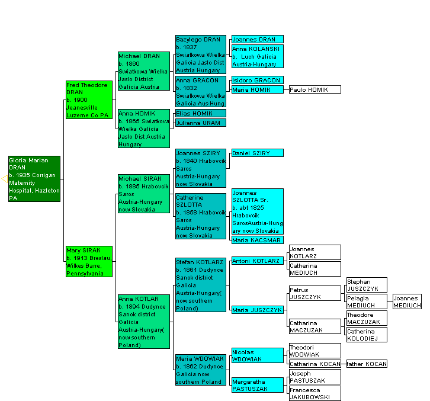

MY PEDIGREE CHART ( as of 2010)
A Pedigree Chart is sometimes called an Ancestral Chart. It shows at a glance the ancestors from whom I directly descend (that means it does not show all the brothers, sisters and cousins that are twigs off the branches). The top layer of blocks denotes my paternal line and the bottom layer my maternal line. You can see that I have had more success in tracking some lines than others. This little graphic which is so nicely colored is a companion program to PAF (Personal Ancestry File). Both are downloadable, free, from www.familysearch.org If you are interested in hardcopy forms, you can download free from many web sites but here is one address http://www.ancestry.com/charts/ancchart.aspx

Email me carpatho_mts@hotmial.com
Return to menu